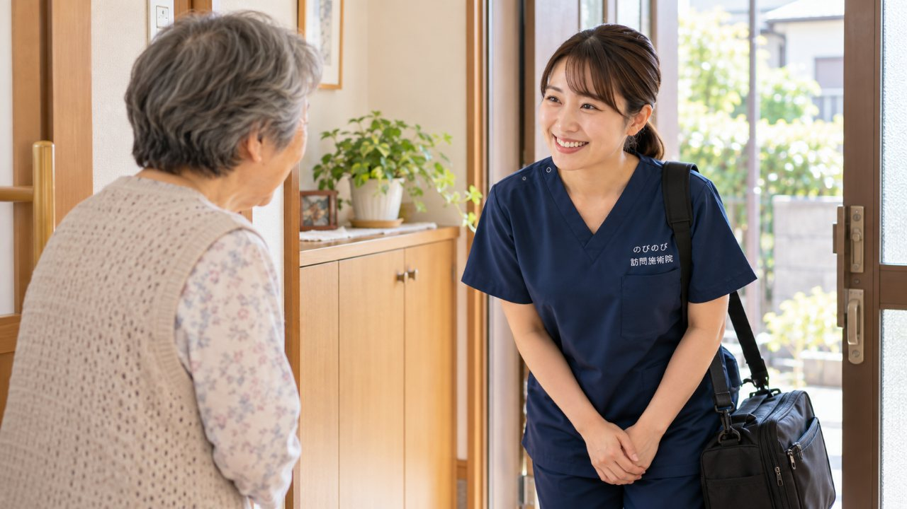

「受けてみたいけれど、いきなり申し込むのは気が引ける」。そう感じる方のために、のびのび訪問施術院では無料体験をご用意しています。ここでは、当日どんなことをするのか、どのくらい時間がかかるのか、何を準備すればよいのか、そして合わなかったときにどうすればよいのかを、順にご説明します。
この記事のポイント
無料体験は、問診・お体の確認・短い施術のお試し・ご説明までをおよそ20〜30分で行い、費用はかかりません。その場で契約を決める必要はなく、合わなければお断りいただけます。合う施術者か、体の反応や雰囲気はどうかを、実際に確かめるための時間です。
無料体験って、実際のところ何をするの？
ひとことで言えば、「本番のミニチュア版」です。訪問鍼灸マッサージがどんなものか、パンフレットや電話の説明だけでは伝わりきらない部分を、実際に体で確かめていただく時間だと思ってください。のびのび訪問施術院の無料体験では、施術者がご自宅にうかがい、今のお体の状態をていねいにお聞きし、軽く動きや張りを確認したうえで、はりやマッサージを少しだけお試しいただきます。最後に、続ける場合にどんな流れになるかをご説明します。
「体験」と聞くと、何か大がかりなことをされるのではと身構える方もいらっしゃいますが、実際は肩やふくらはぎを少しほぐす程度から始めることが多く、思ったより気軽だったとおっしゃる方もいます。膝の痛みや肩のこわばり、脳梗塞のあとの麻痺、パーキンソン病による動かしにくさなど、お悩みは人それぞれですから、その日その方に合わせて内容を調整します。無理に強い刺激を加えることはしませんので、初めての方もどうぞ肩の力を抜いてお迎えください。
申し込んでから当日まで、どう進む？
はじめの一歩は、お電話やお問い合わせフォームでのご連絡です。「体験してみたい」「まず話だけ聞きたい」。どちらでもかまいません。ご連絡をいただいたら、お住まいの地域が対応エリアかどうかを確認します。のびのび訪問施術院は、大阪市・北摂・阪神間にうかがっていますので、この範囲であればご訪問できます。
次に、ご都合のよい日時を一緒に決めます。ご本人の体調や、ご家族が立ち会える曜日、デイサービスやほかの通院との兼ね合いなど、生活のリズムに合わせて調整しますので、遠慮なくご希望をお伝えください。「午前はしんどいので午後がいい」「息子が休みの土曜に」といったご相談も歓迎です。日時が決まれば、あとは当日を待つだけ。申し込みの段階で、対象になるかどうかや同意書のことを細かく詰める必要はありません。それらは体験のあと、続けたいと思われた場合にゆっくりご相談しながら進められます。
当日の流れ：問診から短い施術、説明まで
当日は、約束の時間に施術者がご自宅のインターホンを鳴らすところから始まります。まずは軽くごあいさつをして、手を清め、その場で座っていただいたまま、あるいは横になっていただいたまま、今いちばんつらいところや、これまでの経緯をうかがいます。「歩くと右膝が痛む」「腕が上がりにくくなってきた」「夜、足がつって眠れない」。どんな小さなことでもお話しください。ここで急いで結論を出すことはしません。まずは知ることから、というのが私たちの姿勢です。
お話をうかがったあとは、実際にお体に軽く触れ、関節の動く範囲や筋肉の張り、むくみの様子などを確認します。そのうえで、はりやおきゅう、マッサージのなかからその方に合いそうなものを少しだけお試しいただきます。強さや刺激はそのつど確認しながら進めますので、「もう少しやさしく」「そこが気持ちいい」と、その場で教えていただいて大丈夫です。最後に、感じられた変化やお体の傾向、続ける場合の頻度や料金について、わかりやすくご説明して終わります。
どのくらいの時間がかかる？準備するものと部屋の様子
所要時間の目安は、問診から説明まで含めておよそ20〜30分です。短いお試しですので、長く拘束されることはありません。「気づいたら終わっていた」という方もいれば、質問がたくさんあってもう少しお時間をいただく方もいらっしゃいます。せかすことはしませんので、疑問はその場で遠慮なくぶつけてください。
準備していただくものは、基本的にありません。施術者が必要な道具を持ってうかがいます。お部屋は、ふだん過ごしている場所のままで結構です。ベッドでも、床に敷いたお布団でも、椅子に座ったままでもできます。片づけて待たなくてはと気を張る必要はありません。腕やふくらはぎに触れることがあるので、締めつけの少ない、ゆったりした服装だと動きやすいかもしれない、という程度です。ご家族がそばで見守っていただいてもかまいませんし、少し離れて家事をされていても差し支えありません。
体験で、どんなことがわかるの？
無料体験のいちばんの目的は、「この施術者に、これからお体を任せられそうか」を、ご自身の感覚で確かめていただくことです。話し方はていねいか、こちらの言うことに耳を傾けてくれるか、痛いところに気を配ってくれるか。相性は、パンフレットの写真や口コミだけでは測りきれません。実際に会って、触れてもらってはじめて見えてくるものがあります。
もうひとつは、お体の反応です。軽い施術のあとに、その場で肩が少し軽く感じられる方もいれば、変化はゆっくりで、何回か続けてから気づく方もいます。感じ方には個人差がありますから、「一度で大きく変わらなかった＝合わない」とは限りません。体験で見ていただきたいのは、劇的な結果というより、施術そのものの雰囲気や、施術者との呼吸が自分に合うかどうか。そこがしっくりくれば、続けていく土台ができます。合わないと感じたときにそれが分かるのも、体験の大切な役割です。
費用は無料。もし続けるなら、料金と制度はどうなる？
体験そのものにお金はかかりません。ここは安心してください。そのうえで、続けたいと思われた場合の料金もはっきりお伝えしておきます。のびのび訪問施術院では、1回の施術は総額3,950円で、医療保険の1割負担の方なら1回およそ395円が目安です。ご自宅までうかがう費用は、この施術料に含まれており、別立ての出張費をあらためていただくことはありません。お支払いの明細は、毎回ではなく月ごとにまとめてお渡しします。
受けるにあたっては、医師の同意書が必要になりますが、要介護認定を受けていなくても始められます。介護保険の区分支給限度基準額とは別枠の、医療保険を使った施術ですので、デイサービスやヘルパーなどの利用枠を圧迫しません。1回20〜30分を目安に、はり・きゅうを軸として、その日の状態に応じて手技や、無理のない範囲で身体を動かす運動なども組み合わせます。これらに追加の料金はかかりません。こうした制度まわりの手続きは、体験のあとに続けると決められてから、ひとつずつご一緒に進めていきますので、いま全部を理解しておく必要はありません。同意書を頼みにくいときは「鍼灸の同意書を書いてもらえないとき」が参考になります。
合わなければ断ってOK。家族だけの相談や立ち会いも歓迎です
はっきりお伝えしておきたいのは、体験を受けたからといって、その場で契約を決めなくてよいということです。「持ち帰って家族と相談したい」「ほかも見てから決めたい」。そう言っていただいて何の問題もありません。合わないと感じたら、遠慮なくお断りください。あとからしつこくお電話をかけ続けるようなことはしません。なお、鍼灸の効き方には個人差があり、その日の体調にも左右されます。「一回で変わります」「必ずよくなります」といった言い切りは、私たちはしないようにしています。
ご本人がまだ乗り気でなくても、ご家族だけで先に相談していただくこともできます。「本人は遠慮しているけれど、家族としては受けさせたい」という状況は珍しくありません。体験の日にご家族が立ち会って、一緒に説明を聞いていただくのも大歓迎です。迷っている時間そのものがご負担になることもあります。まずは会って、雰囲気だけでも確かめる。その軽い一歩として、無料体験を使っていただければと思います。
無料体験のお申し込みはお問い合わせから承ります。体験のあと、実際にご利用を始めるまでの段取りはご利用の流れをご覧ください。
よくある質問
無料体験を受けたら、必ず契約しないといけませんか？
いいえ、その必要はありません。体験はあくまでお試しですので、受けたあとに続けるかどうかはご自由に決めていただけます。合わないと感じたらお断りいただいて結構ですし、その後にしつこく勧誘のお電話をかけることもありません。ご家族と相談してから、後日あらためてご連絡いただく方もいらっしゃいます。
体験の日は、何を準備しておけばよいですか？
特別な準備は基本的に不要です。施術に使う道具は施術者が持参します。お部屋もふだんのままで大丈夫で、ベッドやお布団、椅子に座ったままでも受けられます。腕やふくらはぎに触れることがあるので、締めつけの少ないゆったりした服装だと動きやすい、という程度に考えていただければ十分です。
体験はどれくらいの時間がかかりますか？
問診・お体の確認・短い施術のお試し・ご説明まで含めて、おおよそ20〜30分が目安です。長く拘束することはありません。ご質問が多い場合は少しお時間をいただくこともありますが、こちらからせかすことはしませんので、気になることはその場で遠慮なくお尋ねください。
本人がまだ迷っています。家族だけで相談してもよいですか？
はい、ご家族だけのご相談も歓迎しています。ご本人が乗り気でない段階でも、まずはご家族が話を聞いて、雰囲気や料金、制度のことを確かめていただけます。体験当日にご家族が立ち会って一緒に説明を聞くこともできますので、ご本人の気持ちのペースに合わせて進めていきましょう。
体験のあと、続けるにはどんな手続きが必要ですか？
続けると決められたら、医師の同意書をご用意いただく形になりますが、要介護認定は不要です。介護保険の限度額とは別枠の医療保険で受けられます。料金は1回の施術が総額3,950円（1割負担で約395円が目安）で、訪問の費用は施術料に含まれ、別立ての出張費はありません。こうした手続きは体験のあと、ひとつずつご一緒に進めますのでご安心ください。
対応エリアはどこですか？
のびのび訪問施術院は、大阪市の淀川・東淀川・都島・北・旭の各区、北摂の豊中・吹田・茨木・箕面・摂津・池田、阪神間の尼崎・伊丹にうかがっています。この範囲内であれば無料体験にお申し込みいただけます。エリアの境目でご不明な場合は、ご住所をお聞きして確認しますので、まずはお気軽にお問い合わせください。